Foto's van de vakantie in Frankrijk (Mt.Ventoux, Alpen, Monaco, Parijs)? kijk bij de speciale Eendepagina...
| Terug naar welkomstpagina! |
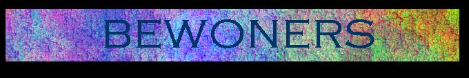
Wij, Lukas, Grolsch, Citroën, Wielrennen, (Christelijke) Symfonische Rock.
| 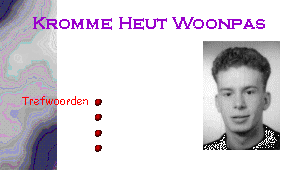 | 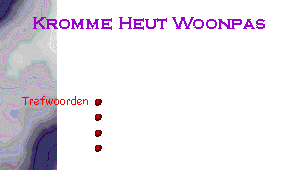 |
|---|---|
| g.bloemendal@bk.tudelft.nl | * nog geen emailadres * |
| 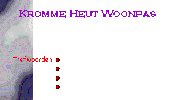 | 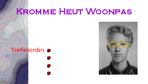 |
|---|---|
| h.schmienk@ct.tudelft.nl | w.visschers@geo.tudelft.nl |
| 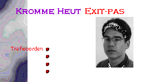 |
|---|
| * nog geen emailadres * oud-bewoner |
Richard van der Ploeg r.a.vanderploeg@br.hen.nl |
Niko Bloemendal rhymed@dds.nl |
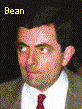 Marcel Steenwijk m.w.steenwijk@elt.hen.nl |
Dan had hier een plaatje moeten staan van Lukas, maar helaas wou hij niet onder de scanner...
| 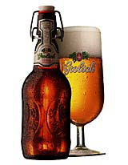 | U ziet het goed: ons kent ons! Dus drinken wij Grolsch! De naam Grolsch klinkt U waarschijnlijk bekend in de oren, misschien wel door deze beugel, die U vast wel eens in de winkel heeft zien liggen. Laat ons U een goede raad geven: koop nou eens dat overheerlijke biertje, want dan zal het ook bekend in mond worden! |
|---|
| 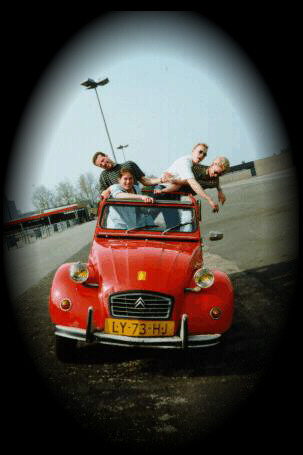 | Wij plegen ons te vervoeren in een van de meest practische automobielen ter wereld, de Eend. Ooit wel eens met vier volwassen mensen èn een tweeënhalf-persoons zitbank in een auto gezeten? Hoe krijgt u uw massieve bureau van 1,70 meter in uw auto? Door de achterdeuren? Door de achterklep? En krijgt u alles dan ook weer dicht? En wat doet u met uw dure middenklasser als de zon schijnt? Met een snijbrander het dak verwijderen? En wat doet u als u een andere Golf tegenkomt? Zwaaien? Enkele technische gegevens:We hebben met een DCC-recorder het geluid opgenomen en bewerkt met Cool-Edit! Voor echt geluid: klik op de foto!! (Door met je rechtermuistoets op de foto te klikken kun de 'file' ook bewaren en thuis beluisteren) Wil je meer foto's van ons en/of de Eend zien, kijk bij de speciale Eendepagina! |
|---|
| Wilmar is een fanatiek wielrenner, dat wil zeggen, hij wordt het pas wanneer er een echte uitdaging wacht. Hij traint namelijk nooit en weet toch menige wedstrijd naar zijn hand te zetten. Zo heeft hij afgelopen zomer met het RiNi-team een aantal cols in Frankrijk beklommen en hierbij duidelijk laten zien wie de baas is: juist een bewoner van Kromme Heut. Waarschijnlijk gaat Wilmar nu kopman worden van het RiNi-team.
Foto's van de vakantie in Frankrijk (Mt.Ventoux, Alpen, Monaco, Parijs)? kijk bij de speciale Eendepagina... |
|---|
| 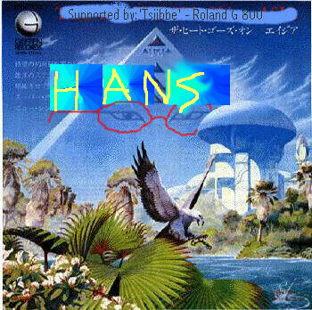 | Deze bewoner, in de volksmond Hans geheten, houdt er van, naar deze melodieuze, complexe muziek te luisteren. En dan met name naar de Christelijke tak. Mocht er iemand zijn die deze muziek kan waarderen, dan zou ik graag contact maken (al heb ik dan geen e-mail-adres, mail anders Wilmar of Gerben) HELEMAAL wanneer je op zoek bent naar de betere bands die via goede muziek het evangelie willen brengen of wellicht speel je zelf in zo'n CHRISTELIJKE symfo-band, dan zou ik heel, heel, heel graag contact maken. Ik heb nog maar één persoon ontmoet die bijvoorbeeld van de bands: "Casino" en met name Geoff Mann's "Eh-band" hebben gehoord. |
| 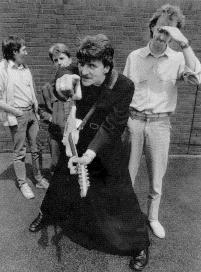 | 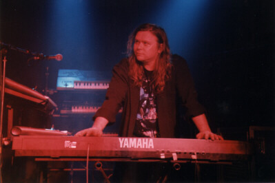 |
| Een foto van de Eh!-Band met zanger Geoff Mann, een van de bands van deze veelzijdige artiest (zie bijvoorbeeld de hoesontwerpen van zijn hand hieronder). | Je zou het niet zeggen, maar deze figuur is thans zeer actief binnen de symfo-wereld; een soort 'Tsjabbe-Tsjibsma' met zijn imposante collectie keyboards. Vaak ook een van de kenmerken van Symfo, zijn de massieve lagen van strings-, en andere synthezisergeluiden. Hij heeft overigens de muziek van "Casino" gecomponeerd. |
| 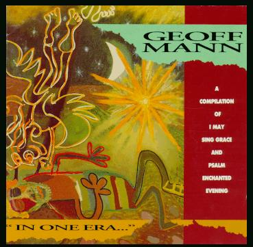 | 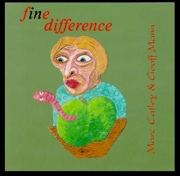 |
Kijk vooral naar de DE beste Symfo-site die er nu is :"Progressive Rock Homepage" www.ari.net/prog/ (zie ook bij Verbindingen)
| Terug naar welkomstpagina! | vervaardigd 30-08-97 door Kromme Heut |